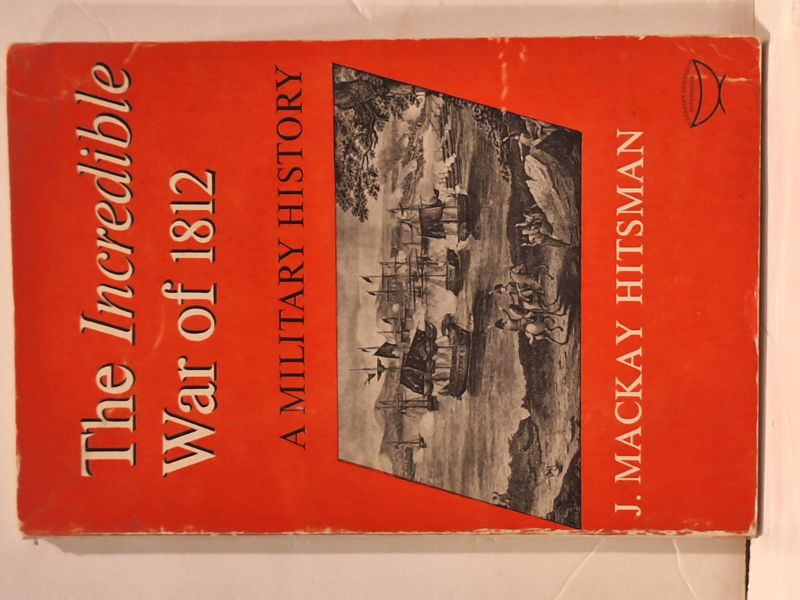

The Incredible War of 1812: A Military History
J. Mackay Hitsman · University of Toronto Press, Toronto, 1965

C$32.0 · Very Good condition
University of Toronto Press, copyright 1965, this copy reprinted 1966 in the U.S.A. Classic single-volume military history of the War of 1812 from the Canadian perspective by Department of National Defence historian J. Mackay Hitsman. Red and white pictorial dust jacket. Hitsman remained the standard study until Donald Graves's revised edition (1999).
Details
- Publisher: University of Toronto Press, Toronto, 1965
- Binding: Hardcover
- Edition: 1966 US printing of the 1965 first edition
- Condition: Very Good
- Dust jacket: Good
- Category: Military